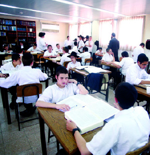

What Does the Rebbe Say: Soldiers Without Uniforms
Many ask and are being asked: What is the Rebbe’s position on drafting yeshiva students into the IDF? The following is a compilation of statements by the Rebbe on this issue.
Translated by Michoel Leib Dobry

Even if a yeshiva bachur wants to sit and learn without receiving a plugged nickel from the state budget meant for far more essential services, e.g., pensions for university professors in the social sciences and actors with the HaBima national theatre, he will be prosecuted in accordance with the full extent of the law.
There are many Jews, including from the Torah observant communities, who are angry at the yeshiva students. “Shall your brethren go to war while you stay here?” asked Moshe Rabbeinu to the children of Gad and Reuven. Today, they use somewhat more modern terms, but the content is the same.
This longstanding question has been heard in Eretz Yisroel for decades. Regrettably, however, there has not been enough explanation from ultra-Orthodox sources to the secular communities in terms they can understand. Torah scholars are not ch”v evading responsibility; they too have been mobilized. There is a physical army and a spiritual army, and the Jewish People need them both.
The Rebbe, Melech HaMoshiach, related to this issue on a number of occasions, and each time, the message was always the same: A yeshiva bachur must not go into the army. For him, the only service is the study of Torah.
The Rebbe explained that just as in the annals of Jewish history—when Yoav went out to war while Dovid sat and studied Torah, which led to Yoav’s victory on the battlefield, similarly—the Torah study of today’s yeshiva bachurim enables the military to emerge victorious in war. This is their participation in the defense of the Jewish People.
The Rebbe compared a yeshiva student who leaves the yeshiva to a high-ranking commander who sends his soldiers to war while he sits in his air-conditioned office, drinking coffee, perusing his maps, and giving orders over the two-way radio (author’s choice of words, not those of the Rebbe MH”M).
Imagine for a moment that as he leans over the maps, an irate father bursts in and protests to the commander that he sent his son into the bloody battle: “Shall your brethren go to war while you stay here?” Suddenly, the commander becomes so affected by the worried father’s justified complaints, he immediately decides to climb into the closest jeep and charge on to the battlefield. I’m not certain what emotion would be stronger: anger towards the condemnatory father for his lack of understanding or scorn for the commander who abandons his post because of an emotional reaction.
A yeshiva bachur who forsakes his Gemara is considered like the commander who vacates his office. The feeling of integrity surging within him cannot change his mission. Just as the commander’s task is to plan for the upcoming battle, similarly, the yeshiva bachur’s role is the spiritual protection of the Jewish People achieved through his Torah study.
“Therefore,” the Rebbe says, “just as a deserter is someone who runs away from the battlefront – if he is placed along the front, by the same token, someone who is placed in a yeshiva to study Torah day and night [as his usefulness is in the merit of the Torah – Yoav’s victory in battle was in the merit of Dovid’s Torah study], and if he closes his Gemara and runs away, because he wants to show that he too is a warrior deserving a ‘medal,’ etc., etc., he too is considered a deserter. Not only is he of no help in attaining victory, on the contrary, he has deserted his post and opens the battlefront before the enemy.”
Indeed, the test facing the Torah scholar is a difficult one to bear. He’ll enlist in the army, fight on the battlefront, earn recognition as a hero, and who knows? – Maybe he’ll even get a medal. In contrast, if he stays and learns Torah, he gets no honor, no money, and hopefully no degradation in the media.
“Go and explain to them that Torah is essential – it is the home front, it is the foundation upon which the physical victory is built…” the Rebbe cried out. However, the plea fell on deaf ears.
“There is religious persecution in Eretz Yisroel,” the Rebbe once told a journalist during a private audience forty years ago. Flabbergasted, the journalist said, “Rebbe, there’s a large and organized rabbinate in Israel, all paid for by the state. Torah scholars are released from army service, and there are religious laws that give the secular community a feeling of oppression. Where is the religious persecution here?”
“All those things of which you speak are happening, and they are not hidden from me. However, in what kind of atmosphere are they being done? How does the public relate to them? What do the journalists have to say?” the Rebbe replied in anguish. Today we can see the painful results of that religious persecution.
The social pressure during that period was extremely heavy, to the point that it even threatened domestic harmony in many families. “When he returns home, his wife asks him, ‘Do you know that our neighbor brought a whole tank home from the battle, while you brought an old Gemara printed a hundred and fifty years ago, when times were as they should be? How is it possible to compare a tank with an old Gemara? For this, they have to make such noise and upheaval?’ Yet, he has no reply!” (Sichos Kodesh 5728, Vol. 1, pg. 39)
TWO ARMIES
The Rebbe, Melech HaMoshiach, often expressed unique affection for members of the military – “Jews serving in the Israel Defense Forces, placing their bodies with literal self-sacrifice, to guard and protect the borders of Eretz Yisroel,” the Rebbe called them.
It doesn’t appear that there are many others who have been privileged to receive such collective attention from the Rebbe. “Convey to the military people my pledge that any soldier who writes to me will receive an answer in return,” the Rebbe said in a rare promise during a ‘yechidus’ to R’ Leibel Zalmanov, who was serving as an officer with the IDF rabbinate. Thus, when he returned to Eretz Yisroel and gave over the Rebbe’s declaration to the soldiers, many of them contacted the Rebbe over the years. As promised, all those who wrote a letter to the Rebbe received a reply.
Throughout the years, mitzvah campaign activities have focused on IDF bases. After each holiday – Chanukah, Purim, and the like, the Rebbe, Melech HaMoshiach, inquired about how mivtzaim were conducted on the army bases. During wartime operations in Eretz Yisroel, the Rebbe issued clear instructions on strengthening and encouraging the soldiers and their commanders.
The only time that the Rebbe delivered an entire sicha in lashon ha’kodesh was when a group of exceptional IDF soldiers arrived for a visit to Beis Chayeinu. At the beginning of the sicha, the Rebbe even “apologized” that he is not used to speaking in this language.
On numerous occasions, the Rebbe instructed that a special hakafa on Simchas Torah be reserved for the Israeli military or that those serving should say “L’chaim” at the farbrengen. “Soldiers in the army are complete tzaddikim because they went out with self-sacrifice,” the Rebbe declared at the height of the Yom Kippur War.
Yet, despite the unique quality the Rebbe attached to IDF soldiers, the Rebbe spoke vigorously about the mandate of yeshiva students not to interrupt their studies. During a farbrengen in 5737, after saying L’chaim for the Israeli army, the Rebbe said: “And in a similar vein, regarding the spiritual army, this is the concept of Torah study – those who protect Jews by learning Torah, to the point of a halachic ruling that it is forbidden to take a Jew whose Torah is his vocation to protect [other] Jews. On the contrary, when they take him from his Torah study, it adversely affects the security.”
A yeshiva bachur doesn’t have any alternatives. A young rabbinical student once wrote to the Rebbe that all his friends had enlisted in the army, serving with great self-sacrifice along the border. However, he was still too young to join the IDF, and he was thinking of discontinuing his studies in yeshiva. His plan was to learn in college to show everyone that even a religious young man could study university subjects while strengthening the security of Eretz HaKodesh. The Rebbe replied: It’s clear that he must go to yeshiva g’dola, learn assiduously and with great diligence, and this will also add to the protection of the Holy Land.
In response to a yeshiva bachur who asked if he was obligated to serve in the military, the Rebbe wrote: “Amazed by his doubt, to the point that he has to ask from afar. Furthermore, there is known and even well publicized the clear halachic ruling of rabbanim – naturally based upon our Torah, the Torah of Life, that yeshiva students should not be inducted into the army, and their study of our Holy Torah assiduously and with great diligence will protect and save our Holy Land (may it be rebuilt and re-established) and those who dwell upon it.”
A HESDER PROGRAM FOR THE CHAREIDIM?
Forty years ago, there was a small party with five Knesset seats that pushed for the conscription of yeshiva students. Ironically, it was called “the National Religious Party.” The Rebbe, Melech HaMoshiach, responded sharply: “It’s incredible to see how even Ben-Gurion, the [Labor] Alignment, and Dayan released yeshiva students from the army, whereas the head of the NRP, that small handful of four or five people with the onus of ‘Who is a Jew?’ hanging around their necks – they are the ones who clandestinely and systematically undermined the release of yeshiva students from the army. Furthermore, in order to get in the good graces of their masters from ‘the Labor Alignment,’ they didn’t hesitate to lift their hands against the spiritual centers of the Jewish People… [based on] a need to place the yeshiva students in a program of ‘hesder yeshivos.’” (Sichos Kodesh 5733, Vol. 1, pg. 451)
The Rebbe then explained the true reasoning behind the actions of the NRP leadership: They want to prove that the Torah is theirs as well; however, they can’t do that when others learn more than they do. To solve this problem, they can choose one of two solutions: either they can increase Torah study within their community or they can cause others to cease their studies. They chose the easier way…
The “national religious” approach regarding the conscription of yeshiva students didn’t just begin then. Three years earlier, when Rabbi Moshe Tzvi Neria was in 770 for yechidus, the Rebbe, Melech HaMoshiach expressed his deep dissatisfaction with an announcement publicized by the B’nei Akiva movement, calling upon yeshiva bachurim to enlist in the army. Rabbi Neria, then considered the rav of the B’nei Akiva youth program, tried to shirk all responsibility. He said that the movement’s national administration had not put out this statement; it had been the initiative of some unknown private individual. The Rebbe’s reply: “In any case, you should have found a way to protest this.”
A PUSH FROM HEAVEN
The first time that the Rebbe, Melech HaMoshiach, farbrenged on the fifteenth of Shvat was after he had been the nasi for twenty years – in 5731. Chassidim were surprised, as Chabad had never commemorated this date before in any unique manner.
The following Shabbos HaGadol, in the middle of the farbrengen, the Rebbe’s facial expression suddenly changed, as if he was talking to himself. During that sicha, there were some rare Heavenly-inspired expressions:
“For several years, I have been traveling to the Ohel each Erev Rosh Chodesh and each fifteenth of the month. They’ve been ‘pushing’ me for many years to make a farbrengen on Tu B’Shvat, but I was always evasive… because I had never seen our Rebbeim making something out of Tu B’Shvat.
“This year, however, I could no longer avoid the issue. When I returned from the Ohel I announced that there would be a farbrengen. G-d helped me, and no one asked why we would be farbrenging on Tu B’Shvat. While there actually was a farbrengen, I still didn’t know what I would say…
“I looked through the Chassidic maamarim of our Rebbeim, but I didn’t find a maamer suitable for Tu B’Shvat. However, when I sat at the farbrengen, there was a maamer and there was a sicha.”
Suddenly, the Rebbe placed his holy hand upon his forehead and said, as if he was talking to himself: “This week, when I realized why they had been pushing me in this matter, I decided that from now on, bli neder, whenever they push me in such matters – I won’t try to be evasive any longer…”
The Rebbe’s instruction during the Tu B’Shvat 5731 farbrengen had been to increase Torah study as a means of conquering the world. Not long after the farbrengen, a new decree was issued regarding the compulsory drafting of yeshiva students. “The world must be conquered with a shturem by increasing the study of Torah with greater strength and greater fortitude,” was the Rebbe’s advice to bring about a nullification of this decree.
“Now I have realized,” the Rebbe concluded, “why they pushed me to farbreng on Tu B’Shvat.”
FROM THE SOURCES: MILITARY EXEMPTIONS FOR TORAH SCHOLARS
TORAH SCHOLARS ARE EXEMPT FROM HELPING TO GUARD THE CITY
Rabbi Yehuda says: Everyone assists in building the wall of the city and erecting its gates to prevent an enemy army from entering the city – even orphans, but not Torah scholars. What is the reason? A Torah scholar does not require protection (his Torah protects him), as is written, “When you lie down, it shall guard you.”
(Bava Metzia 108a, Bava Basra 8a – as per Rashi’s commentary)
Payment for all the things necessary for the protection of a city is collected from all of its inhabitants, even from orphans, with the exception of Torah scholars. For Torah scholars do not require protection; their Torah study protects them.
(Rambam, Hilchos Sh’cheinim 6:6; Tur and Shulchan Aruch, Choshen Mishpat 163:4)
Torah sages should not personally take part in any communal work projects – e.g., building, digging, or the like – [to improve] the city, lest they become disgraced in the eyes of the common people. Money should not be collected from them to pay for building the [city] wall, fixing its gates, its watchmen’s wages, and the like. [The same applies regarding] a present to be offered to the king.
(Rambam, Hilchos Talmud Torah 6:10; Tur and Shulchan Aruch, Yore Deia 243:2)
G-D’S LEGION DID NOT GO OUT TO WAR AS DID THE REST OF AM YISROEL
Why did the Leviim not receive a portion in the inheritance of Eretz Yisroel and in the spoils of war like their brethren? Because they were set aside to serve G-d and minister unto Him and to instruct people at large in His just paths and righteous judgments, as is stated: “They will teach Your judgments to Yaakov and Your Torah to Yisroel.” Therefore, they were set apart from the ways of the world. They do not wage war like the remainder of the Jewish people, nor do they receive an inheritance, nor do they acquire for themselves through their physical power. Instead, they are G-d’s legion, as is stated: “G-d has blessed His legion,” and He provides for them, as is stated: “I am your portion and your inheritance.”
Not only the tribe of Levi, but any one of the inhabitants of the world, whose spirit generously motivates him and he understands with his wisdom to set himself aside and stand before G-d to serve Him and minister to Him and to know G-d, proceeding justly as G-d made him, removing from his neck the yoke of the many reckonings which people seek, he is sanctified as holy of holies. G-d will be His portion and heritage forever and will provide what is sufficient for him in this world like He provides for the Kohanim and the Leviim. And thus, Dovid declared: “G-d is the lot of my portion; You are my cup, You support my lot.”
(Rambam, Hilchos Shmita V’Yovel 13:12-13)
DOVID HA’MELECH’S TORAH AIDED YOAV IN BATTLE
Rabbi Abba bar Kahana said: Were it not for Dovid, Yoav would not have succeeded in war, and were it not for Yoav, Dovid could not have devoted himself to [the study of] the Torah, for it is written, “And Dovid executed justice and righteousness for all his people, and Yoav ben Zeruia was over the host.” Why was Dovid able to “execute justice and righteousness for all his people?” – Because “Yoav was over the host.” And why was “Yoav over the host?” – Because “Dovid executed justice and righteousness for all his people.”
(Sanhedrin 49a – as per Rashi’s commentary)
D. Levanon. "What Does the Rebbe Say: Soldiers Without Uniforms." Beis Moshiach, no. 919 (March 12, 2014).